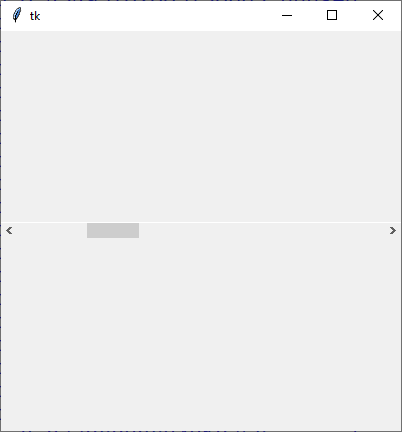

ttk.Scrollbar
Eine Scrollleiste. Für Beispiele, wie man eine Scrollbar mit anderen Widgets nutzt, siehe beispielsweise Canvas oder Listbox.
ttk.Scrollbar erzeugen
sb = ttk.Scrollbar(parent, Optionen)
Scrollbar kennt die Optionen:
| Optionsname | Beschreibung |
|---|---|
| command | Callback, die bei Änderung aufgerufen wird.
Parameter variieren:
|
| orient | Ausrichtung der Scrollbar: tk.VERTICAL, tk.HORIZONTAL |
ttk.Scrollbar kennt die Standardoptionen: class_, cursor, style, takefocus
Das folgende Programm stellt eine Scrollbar vor und reagiert auf Mausklicks:
import tkinter as tk
from tkinter import ttk
from tkinter import font
class A(tk.Tk):
def __init__(self):
super().__init__()
self.geometry('400x400')
self._createWidgets()
def _createWidgets(self):
sb = ttk.Scrollbar(self, orient=tk.HORIZONTAL, command=self._onScroll)
sb.pack(expand=tk.YES, fill=tk.X)
sb.set(0.2, 0.3)
def _onScroll(self, A, B, C='unused'):
print('Wert:', A, B, C)
if __name__ == '__main__':
window = A()
window.mainloop()Scrollbar-Methoden
| Methode | Parameter | Rückgabewert | Beschreibung |
|---|---|---|---|
| sb.get() | - | Liste | Scrollbar-Einstellungen werden als Liste zurückgegeben |
| sb.set(first, last) | Werte zwischen 0…1 | - | Diese Methode wird typischerweise intern von xscrollcommand
und yscrollcommand des zugehörigen Widgets verwendet.
Es wird der sichtbare Bereich gesetzt. |
Sowie die allgemeinen Widgetmethoden:
- Konfigurationsmethoden:
cget(…)undconfigure(…) - Sonstige Methoden:
identify(…),instate(…)undstate(…)